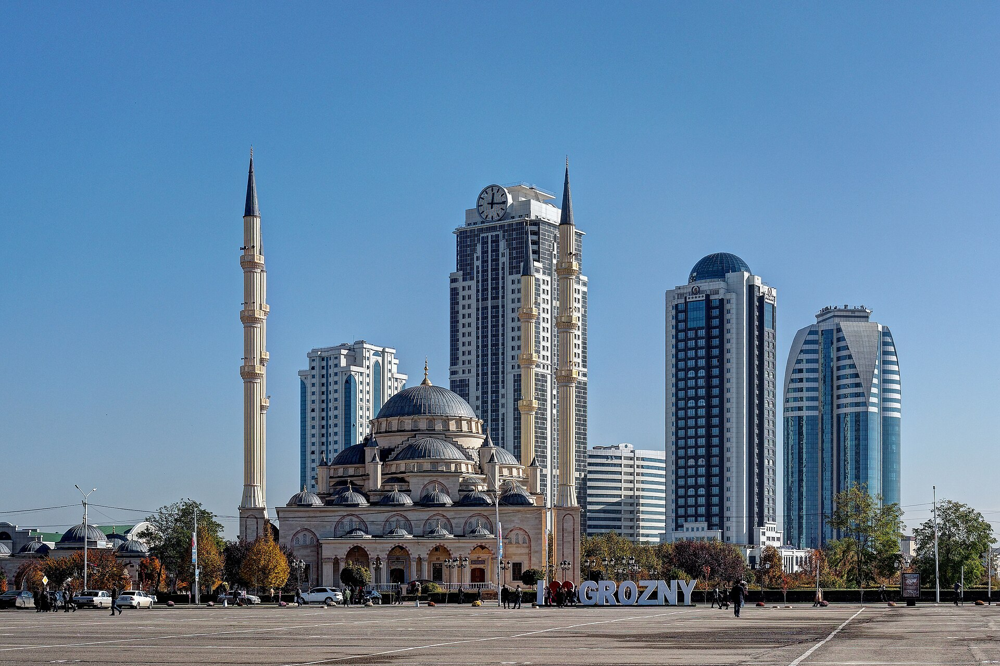

ПУТЕШЕСТВИЯ ПО ЧЕЧНЕ
Чечня ближе,
чем кажется.
Находите места, узнавайте их истории и собирайте собственный маршрут по республике.

ВАШ ОРИЕНТИР
Исследуйте карту
Нажмите на метку, чтобы узнать о месте подробнее.
ВЫБРАННЫЕ МЕСТА
Есть что посмотреть
ВАШЕ ПУТЕШЕСТВИЕ
Соберите маршрут
под себя.
Отметьте интересные места. moyGid предложит порядок посещения, чтобы путь между выбранными точками был короче.
Порядок точек рассчитывается по прямому расстоянию. Дорожный маршрут и время в пути уточняйте в навигаторе.
Схема показывает порядок остановок. Точную дорогу и время поездки Google Карты рассчитают после перехода.
ОБ АВТОРЕ
Здесь моя родина.
Меня зовут Мурад Витаев. Этот сайт я сделал для конкурса «Здесь моя родина», чтобы собрать в одном месте места Чечни, которые стоит увидеть, и дать возможность составить по ним свой маршрут.
Каждое место можно открыть, посмотреть фотографии, найти на карте и добавить в поездку.
-
01
Выберите места
Найдите их на карте или в каталоге и отметьте кнопкой «+».
-
02
Постройте маршрут
Сайт расставит остановки в порядке посещения от выбранной точки старта.
-
03
Откройте в Google Картах
Дорогу и время в пути рассчитает навигатор.